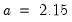
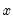
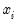
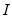
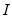

The following is a description of the basic EViews graph types. We divide these graph types into three classes: observation graphs that display the values of the data for each observation;
analytical graphs that first summarize the data, then display a graphical view of the summary results;
auxiliary graphs, which are not conventional graph types,
per se, but which summarize the raw data and display the results along with an observation graph of the original data.
The discussion for each type is limited to a basic overview of each graph type and does not discuss many of the ways in which the graphs may be customized (e.g., adding histograms to the axes of line graphs or scatterplots;), nor does it describe the many ways in which the graphs are displayed when using multiple series or categorizations (
e.g., stacking; see
“Basic Customization”).
Observation graphs display the values of the data for each observation in the series or group. Some observation graphs are used for displaying the data in a single series (Line & Symbol, Area, Bar, Spike, Dot Plot, Seasonal Graphs), while others combine data from multiple series into a graph (Area Band, Mixed, Error Bar, High-Low(-Open-Close), Scatter, Bubble, XY Line, XY Bar, XY Area, Pie).
To display a line and symbol plot for a single series or for each series in a group, select from the series or group menu to bring up the main dialog, which will automatically open to the page. Then choose in the listbox.
You may display your graph symbols alone, or using lines and symbols by clicking the section in the option group, and changing the desired attributes (
“Lines and Symbols”). There are other settings for controlling color, line pattern, line width, symbol type, and symbol size that you may modify.
You may add numeric value labels to your bars by double clicking on the bar to display the graph dialog, selecting the section in the option group, and select either , or in the section of the dialog page. EViews will add a label showing the height of the bar, provided that there is enough space to display the label.
You may use the drop-down menu to apply fade effects to your bars. By default, EViews displays the , but you may instead choose to display , , . The latter two entries fade the bars from light to dark, with the fade finishing at the zero axis. Note that at press time, fades are not supported when exporting graphs to PostScript.
The checkbox will do exactly as the option suggests. Alternately, EViews will simply stack sequential elements, even if negative values are encountered.
The section in the option group may be also used to change the basic characteristics of the fill area (color, gray shading, hatching,
etc.). See
“Fill Areas” for details.
The dialog under the group may be used to modify the characteristics of the lines and shades in your graph.
This graph type combines line, bar, spike, area, or area band graphs. You may, for example, use the mixed graph to display multiple series in single graph, with the first series shown as a bar, spike, or area graph, or with the first two series displayed as an area band graph, with the remaining series depicted using lines.
When you select , the left-hand side tree adds an additional page under for . You will use this node to specify the types of graphs you wish to mix. When you click on this node, the right-hand side of the dialog changes to display the new settings:
You may use the dropdown menus to select different types for each series. If there is a type such as that requires more than one series, EViews will construct the graph using the series defined by a pair of series. Note that the pairs need not be contiguous.
The dot plot is a symbol only version of the line and symbol graph (“Line & Symbol”) that uses circles to represent the value of each observation. It is equivalent to the plot with the lines replaced by circles, and with a small amount of indenting to approve appearance.
You may display a high-low graph for any group object containing two or more series. To display an high-low graph, from the group menu, and then choose in the listbox. Data for up to four series will be used in forming the graph.
assigns the first series of the group to the horizontal axis, uses the last series in the group to determine the bubble size, and assigns all other series (from the second to the penultimate) to the vertical axis. Suppose, for example, we have a group GROUP01 consisting of the series X, Y1, Y2, Y3, and Z (in the workfile “Bubble_xyz.wf1”).
Alternatively, the approach uses successive series triplets in the group to create plots. Within each triplet, the first series of the triplet is assigned to the horizontal axis, the second series is assigned to the vertical axis and the last series of the triplet determines bubble size.
Further, clicking on the button brings up a dialog with options for how to compute and display the bubbles in your plot:
The describes how the weight series values will be interpreted. You may choose between weights that are proportional to the of the bubble, or weights that are proportional to the of the bubble.
The dropdown describes how to handle negative weights, if found. You may choose to ignore those observations (), use the absolute value (), or simply to use the absolute value ().
The settings allow you to override the EViews Auto size method, and choose a size relative to the mean value. Selecting enables a dropdown with various size settings ranging from to .
These custom bubbleplot settings apply to the bubble element that was selected when you clicked on the button. If you wish to apply these settings to all of the bubble elements in a multiple triplet setting, click on .
Our illustration of the XY area graph uses data on U.S. unemployment as discussed in “XY Line”. Note that the example graph is not particularly informative as XY area graphs are generally employed when the values of the data in the X series are monotonically increasing. For example, XY area graphs are the underlying graph type that EViews uses to display filled distribution graphs.
Our illustration uses the XY bar graph to create a variable width histogram for the 3-month Treasury security data from“Treasury2005c.WF1”. We first use to divide the series into categories defined by the intervals [2.25, 2.5), [2.5, 3), [3, 3.9), [3.9, 4.5). The classified series is given by TB03MTH_CT. The frequency view of this series is given by:
This graph is an observation graph where each observation is pictured as a pie chart, with the wedges of the pie representing the series value as a percentage of the group total. (If a series has a negative or missing value, the series value will be dropped from the calculation for that observation.)
To display a seasonal graph for a single series or for each series in a group, select from the series or group menu, and then choose in the listbox. Note that if your workfile does not follow a monthly or quarterly regular frequency, will not appear as a specific graph type.
When you select the right-hand side of the page changes to provide a dropdown containing two options for displaying the graph. The first option, , instructs EViews to divide the graph into panels, each of which will contain a time series for a given season. If, for example, we have a monthly workfile, the graph will be divided into 12 panels, the first containing a time series of observations for January, the second containing a time series for February,
etc. The second option, , overlays the time series for each season in a single graph, using a common date axis.
We first display a seasonal graph for the series TOTAL. Note that the graph area is divided into panels, each containing a time series for a specific month. The graph also contains a set of horizontal lines marking the seasonal means.
We may contrast this form of the seasonal graph with the form of the seasonal graph. The differences in the individual time series lines provide a different form of visual evidence of seasonal variation in housing starts. The overlayed form of the seasonal graph makes it easier to compare values for a given period.
To display an error bar graph, select from the group menu, and then choose in the listbox. Our illustration shows an XY error graph for the (XXX - need example here)...
To display a histogram for a single series or for each series in a group, select from the series or group menu, then select from the listbox. The right-hand side of the dialog will change to show options. Select from the drop-down (the default).
When you select , EViews displays an button that opens the dialog. This dialog allows you to customize your histogram estimate or to add additional distribution graphs. You may, for example, add a fitted theoretical distribution plot or kernel density to the histogram.
Adding additional graph elements may be done using the button in the section of the dialog. As you add elements, they will appear in the listbox on the left. You may select any graph element to display its options on the right-hand side of the page. In this example, there is only the single histogram graph element (which is selected), and the dialog shows the options for that histogram.
First, the dropdown menu lets you choose between showing the count of the number of observations in a bin (), an estimate of the density in the bin (), and the fraction of observations in each bin (). The density estimates are computed by scaling the relative frequency by the bin width so that the area in the bin is equal to the fraction of observations.
Next, and specify the construction of the bin intervals. By default, EViews tries to create bins that are defined on “nice” numbers (whole numbers and simple fractions). These estimates do not have any particular statistical justification.
For our example data, displaying a histogram of the CDRATE data using the binwidth method shows a histogram with considerably fewer bins and modified vertical axis scaling. One could argue that the shape of the CDRATE distribution is more apparent in this plot, at the cost of detail on the number of observations in easily described categories.
The checkbox controls how observations that equal a bin endpoint are handled. If you select this option, observations equal to the right-endpoint of a bin will be classified as being in the bin, while observations equal to the left-endpoint will be placed in the previous bin.
To display a histogram polygon for a single series or for each series in a group, select from the series or group menu, then select from the listbox. Then choose from the options on the right-hand side.
You may control the computation of the histogram polygon by clicking on the button, and filling out the resulting dialog. In addition to all of the options described in
“Histogram”, you may instruct EViews to display the fill the area under the polygon by clicking on the checkbox.
Note that the data based methods for determining bin size differ from those for the frequency polygon. The bandwidth is chosen as in the frequency polygon with  for the , , and methods, and for . The constant factor in the Freedman-Diaconis is a crude adjustment that takes the histogram value for

and scales it by the ratio of the normal scaling factors for the frequency polygon and the histogram ().
Jones, et al. (1998) propose a modification of the frequency polygon that joins the bin right-edges by straight lines. This modification generates a smoothed histogram that improves on the properties of the frequency polygon.
To display a edge polygon, select from the series or group menu, then select from the listbox. Then choose from the drop-down to the right.
To compute an ASH, select from the series or group menu, then select from the listbox. Then choose from the drop-down to the right.
When you select , EViews displays an button that opens the dialog allowing you to customize your ASH or to add additional distribution graphs (see
“Histogram” for a discussion of the latter topic).
To compute and display a kernel density estimate for a single series or for each series in a group, select from the series or group menu, then choose in the listbox. The right-hand side of the dialog page will change to provide a dropdown menu prompting you to choose a distribution graph. You should select .
When you select , EViews displays an button that opens the dialog. This dialog allows you to customize your kernel density estimate, or to add additional distribution graphs. You may, for example, choose a different kernel function, or a different bandwidth, or you may add a histogram or fitted theoretical distribution plot to the graph.
The section of the dialog allows you to specify your kernel function and bandwidth selection:
|
•
|
Kernel. The kernel function is a weighting function that determines the shape of the bumps. EViews provides the following options for the kernel function  :
|
|
•
|
Bandwidth. The bandwidth  controls the smoothness of the density estimate; the larger the bandwidth, the smoother the estimate. Bandwidth selection is of crucial importance in density estimation (Silverman, 1986), and various methods have been suggested in the literature. The Silverman option (default) uses a data-based automatic bandwidth:
|
To specify a bandwidth of your choice, click on the User Specified option and type a nonnegative number for the bandwidth in the corresponding edit box. Although there is no general rule for the appropriate choice of the bandwidth, Silverman (1986, section 3.4) makes a case for undersmoothing by choosing a somewhat small bandwidth, since it is easier for the eye to smooth than it is to unsmooth.
The Bracket Bandwidth option allows you to investigate the sensitivity of your estimates to variations in the bandwidth. If you choose to bracket the bandwidth, EViews plots three density estimates using bandwidths ,

, and .
|
•
|
Number of Points. You must specify the number of points  at which you will evaluate the density function. The default is  points. Suppose the minimum and maximum value to be considered are given by and , respectively. Then is evaluated at  equi-spaced points given by:
|
|
•
|
Method. By default, EViews utilizes the Linear Binning approximation algorithm of Fan and Marron (1994) to limit the number of evaluations required in computing the density estimates. For large samples, the computational savings are substantial.
|
The Exact option evaluates the density function using all of the data points for each

,

for each

. The number of kernel evaluations is therefore of order , which, for large samples, may be quite time-consuming.
|
•
|
. This dropdown menu controls the information placed in the legend for the graph. By default, EViews uses a minimalist approach to legend labeling; information sufficient to identify the estimate is provided. In some cases, as with the kernel density of a single series, this implies that no legend is provided. You may elect instead to always display a short legend (), to display detailed kernel choice and bandwidth information (), or you may elect to suppress all legend information ().
|
|
•
|
. Select this option if you wish to draw the kernel density as a filled line graph.
|
You may plot the density function of a theoretical distribution by selecting from the series or group menu, and choosing in the listbox. The right-hand side of the dialog page will change to provide a dropdown menu prompting you to choose a distribution graph. You should select .
The button may be used to display the dialog. As with other distribution graphs, the left-hand side of the dialog may be used to add distribution graphs to the current plot (
e.g., combining a histogram and a theoretical distribution).
The provides control over iterative estimation, if relevant. You should not need to use these settings unless the graph indicates failure in the estimation process. Most of the options are self-explanatory. If you select , EViews will take the starting values from the C coefficient vector.
To display the empirical CDF, you should select from the series or group menu, choose in the listbox, and select in the dropdown.
Clicking on the button displays a dialog that allows you to specify the method for computing the CDF, to turn on or off the displaying of confidence intervals, to specify the size of the confidence interval, and to control the display of legend entries.
The dropdown controls the method of computing the CDF. Given a total of

observations, the CDF for value

is estimated as:
To display the empirical survivor function, select from the series or group menu, choose in the listbox, and select in the dropdown.
See “Empirical CDF” for additional discussion and a description of the dialog brought up by the button.
To display the empirical log survivor function, select from the series or group menu, choose in the listbox, and select in the dropdown.
See “Empirical Survivor” for additional discussion and a description of the dialog brought up by the button.
To display the empirical quantile plot, select from the series or group menu, choose in the listbox, and in the dropdown.
See “Empirical Survivor” for a description of the dialog brought up by clicking the button.
Theoretical quantile-quantile plots are used to assess whether the data in a single series follow a specified theoretical distribution; e.g. whether the data are normally distributed (Cleveland, 1994; Chambers,
et al. 1983). If the two distributions are the same, the QQ-plot should lie on a straight line. If the QQ-plot does not lie on a straight line, the two distributions differ along some dimension. The pattern of deviation from linearity provides an indication of the nature of the mismatch.
To display the theoretical quantile-quantile plot, select from the series or group menu, choose in the listbox, and select in the dropdown to the right.
The button may be used to display the dialog. The left-side of this graph may be used to add additional QQ-plots to the current plot, allowing you to compare your data to more than one theoretical distribution.
Lastly, the checkbox provides you with the option of plotting a regression line through the quantile values.
To display the quantile-quantile symmetry plot, select from the series or group menu, choose in the listbox, and select in the dropdown to the right.
The button may be used to display the dialog. The settings offered in this dialog are limited; you may choose whether to display the 45 degree line and may modify the legend settings.
The settings accessed through the button are limited; you may specify a computation method, choose whether to display the fit line, and modify the legend settings. These settings are discussed in
“Theoretical Distribution” and
“Quantile-Quantile (Theoretical)”.
The box portion of a boxplot represents the first and third quartiles (middle 50 percent of the data). These two quartiles are collectively termed the hinges, and the difference between them represents the
interquartile range, or IQR. The median is depicted using a line through the center of the box, while the mean is drawn using a symbol. Note that EViews computes the median for boxplots using the Rankit method.
The inner fences are defined as the first quartile minus 1.5*IQR and the third quartile plus 1.5*IQR. The inner fences are typically not drawn in boxplots, but graphic elements known as
whiskers and
staples show the values that are outside the first and third quartiles, but within the inner fences. The staple is a line drawn at the last data point within (or equal to) each of the inner fences. Whiskers are lines drawn from each hinge to the corresponding staple.
Data points outside the inner fence are known as outliers. To further characterize outliers, we define the
outer fences as the first quartile minus 3.0*IQR and the third quartile plus 3.0*IQR. As with inner fences, outer fences are not typically drawn in boxplots. Data between the inner and outer fences are termed
near outliers, and those outside the outer fence are referred to as
far outliers. A data point lying on an outer fence is considered a near outlier.
In addition to the option on the main page which allows you to rotate your boxplots, you may specify a number of display options in the dialog under the group.
The left-hand side of the dialog allows you to show or hide specific elements of the boxplot, to control the box widths, and to modify the appearance of the notching and shading.
In the right-hand portion of the dialog, you may customize individual elements of your graph. Simply select an element to customize in the listbox or click on the depiction of a boxplot element in the window, and then modify the , , , and type as desired. Note that each boxplot element is represented by either a line or a symbol; the dialog will show the appropriate choice for the element that you have selected.
The window will change to display the current settings for your graph. You may also click on elements within the window to select them in the listbox, if you find this easier. To revert to the original graph settings, click on .
EViews can construct several analytical graphs that are only meant to be added to observation graphs; we term these graphs auxiliary graphs. Strictly speaking, auxiliary XY graphs should not be thought of as a distinct graph type, but rather as a class of modifications that may be applied to an observation plot.
At present, auxiliary graphs may be added on top of scatterplots and XY line graphs. When either or is selected in the listbox, the right-hand side of the graph dialog changes to offer the dropdown menu, where you can select one of the auxiliary types to be added to the graph. If you wish to add additional auxiliary graphs or if you wish to customize the settings of your specified type, you should click on the button to display additional settings.
Clicking on the button next to the selection displays the dialog. The left-hand side of the dialog may be used to add additional auxiliary graphs; simply click on the button and select the type of element you wish to add.
Next, you may instruct EViews to perform robustness iterations (Cleveland, 1993). The least squares method is very sensitive to the presence of even a few outlying observations. The Robustness Iterations option carries out a form of weighted least squares where outlying observations are given relatively less weight in estimating the coefficients of the regression.
For any given transformation of the series, the Robustness Iteration option carries out robust fitting with bisquare weights. Robust fitting estimates the parameters

,

to minimize the weighted sum of squared residuals,
To choose the number robustness iterations, click on the check box for Robustness Iterations and specify an integer for the number of iterations.
Both the nearest neighbor fit (“Nearest Neighbor Fit”), and the kernel regression fit are nonparametric regression methods that fit local polynomials. The two differ in how they define “local” in the choice of bandwidth. The effective bandwidth in nearest neighbor regression varies, adapting to the observed distribution of the regressor. For the kernel fit, the bandwidth is fixed but the local observations are weighted according to a kernel function.
You may click on the button next to the selection to display the dialog. As always, the left-hand side of the graph may be used to add additional auxiliary graphs, while the right-hand side of the dialog provides options for the kernel fit.
You will need to specify the form of the local regression ( constant, , ), the kernel function, the bandwidth, and other options to control the fit procedure.
Here, you will specify the order of the polynomial  to fit at each data point. The
to fit at each data point. The option sets and locally fits a constant at each

. sets

at each . For higher order polynomials, mark the option and type in an integer in the field box to specify the order of the polynomial.
To specify your own bandwidth, mark User Specified and enter a nonnegative number for the bandwidth in the edit box.
The Bracket Bandwidth option fits three kernel regressions using bandwidths

,

, and

.
The Linear Binning method (Fan and Marron, 1994) approximates the kernel regression by binning the raw data fractionally to the two nearest evaluation points, prior to evaluating the kernel estimate. For large data sets, the computational savings may be substantial, with virtually no loss of precision.
The Exact method performs a regression at each , using all of the data points , for . Since the exact method computes a regression at every grid point, it may be quite time consuming when applied to large samples. In these settings, you may wish to consider the linear binning method.
This class of regressions includes the popular Loess (also known as
Lowess) techniques described by Cleveland (1993, 1994). Additional discussion of these techniques may be found in Fan and Gijbels (1996), and in Chambers, Cleveland, Kleiner, Tukey (1983).
Clicking on the button next to the Nearest Neighbor Fit dropdown selection displays the dialog. The left-hand side of the dialog may be used to add additional auxiliary graphs, while the right-hand side of the dialog provides options for the nearest neighbor fit.
For each point in the sample selected by the hod option, we compute the fitted value by running a local regression using data around that point. The
Specification option determines the rules employed in identifying the observations to be included in each local regression, and the functional form used for the regression.
Polynomial degree specifies the degree of polynomial to fit in each local regression.
Bandwidth span determines which observations should be included in the local regressions. You should specify a number

between 0 and 1. The span controls the smoothness of the local fit; a larger fraction

gives a smoother fit. The fraction

instructs EViews to include the observations nearest to the given point, where

is % of the total sample size, truncated to an integer.
If you mark the Bracket bandwidth span option, EViews displays three nearest neighbor fits with spans of ,

, and .
Note that this standard definition of nearest neighbors implies that the number of points need not be symmetric around the point being evaluated. If desired, you can force symmetry by selecting the Symmetric neighbors option.
Symmetric Neighbors forces the local regression to include the same number of observations to the left and to the right of the point being evaluated. This approach violates the definition, but arguably not the spirit, of nearest neighbor regression. Differences between the two approaches will show up where the data are thin (there are relatively few observations in the region).
Local Weighting (Tricube) weights the observations of each local regression. The weighted regression minimizes the weighted sum of squared residuals:
Robustness Iterations iterates the local regressions by adjusting the weights to downweight outlier observations. The initial fit is obtained using weights

, where

is tricube if you choose
Local Weighting and 1 otherwise. The residuals

from the initial fit are used to compute the robustness bisquare weights
“Regression Line”. In the second iteration, the local fit is obtained using weights . We repeat this process for the user specified number of iterations, where at each iteration the robustness weights

are recomputed using the residuals from the last iteration.
|
•
|
Cleveland subsampling performs the local regression at only a subset of points. You should provide the size of the subsample  in the edit box.
|
Apart from adding other auxiliary graphs, the only option for orthogonal regression is the dropdown menu. If you wish to see the properties of your fitted line you should select . EViews will display the mean of

, the mean of

and the estimated angle parameter.
Pressing the button next to the dropdown selection opens a dialog that allows you to specify additional auxiliary graphs to be added, or to modify the ellipse options.
Lastly, you may use the dropdown menu to change the amount of information provided. If you select , EViews will always display both the probability associated with each ellipse as well as the distribution used to compute values.
You may add custom fit lines to your scatterplot. Within a scatterplot, select from the drop-down on the page, and click the button to display dialog. The left-hand side of the dialog may be used to add additional auxiliary graphs, while the right-hand side of the dialog provides options for the user-defined line.
EViews offers three different ways to specify your line, which you can select via the dropdown menu. The methods available are (setting values for the Y-intercept and slope), (selecting two points of data to draw the line through), or , which allows more complicated line specifications.
Similarly, we could specify two points through which to draw the line by selecting as the line type. We use the points (180,6) and (750,9), which results in the following, similar, graph:


determines the weights to be applied to observations in each local regression. The larger the
, the smoother the fit. By default, EViews arbitrarily sets the bandwidth to:
data to the fit line. This graph may be contrasted with the regression fit (“Regression Line”) which displays the line that minimizes the sum of squared vertical distances from the data to the corresponding fitted
values on the regression line.
Apart from adding other auxiliary graphs, the only option for orthogonal regression is the Legend labels dropdown menu. If you wish to see the properties of your fitted line you should select Full. EViews will display the mean ofand degrees-of-freedom.
Pressing the Options button next to the Confidence Ellipse dropdown selection opens a dialog that allows you to specify additional auxiliary graphs to be added, or to modify the ellipse options.Next, you may change the method of computing the interval to use thedistribution instead of the F-distribution.
Lastly, you may use the Legend labels dropdown menu to change the amount of information provided. If you select Full, EViews will always display both the probability associated with each ellipse as well as the distribution used to compute values.You may add custom fit lines to your scatterplot. Within a scatterplot, select User-defined from the Fit lines drop-down on the Basic Type page, and click the Options button to display Scatterplot Customize dialog. The left-hand side of the dialog may be used to add additional auxiliary graphs, while the right-hand side of the dialog provides options for the user-defined line.EViews offers three different ways to specify your line, which you can select via the Line type dropdown menu. The methods available are Intercept-Slope (setting values for the Y-intercept and slope), Data pairs (selecting two points of data to draw the line through), or Custom, which allows more complicated line specifications.For example, let’s start by creating a simple intercept-slope line, with an intercept of “5” and a slope of “0.005”. We also select the Detailed Legend labels option, which results in the following graph:Similarly, we could specify two points through which to draw the line by selecting Data pairs as the line type. We use the points (180,6) and (750,9), which results in the following, similar, graph:
 matrix VARWIDTH where the first column contains the low limit points, the second column contains the high limit points, and the last column contains the number of observations that fall into the interval.
matrix VARWIDTH where the first column contains the low limit points, the second column contains the high limit points, and the last column contains the number of observations that fall into the interval.  that minimizes the integrated mean square error of the approximation (IMSE) using the formula, :
that minimizes the integrated mean square error of the approximation (IMSE) using the formula, : ,
,  ,
, 
 is the sample standard deviation,
is the sample standard deviation,  is the interquartile range, and
is the interquartile range, and  is the number of observations.
is the number of observations. at a point
at a point  is estimated by:
is estimated by: is the number of observations,
is the number of observations,  is the bandwidth (or smoothing parameter) and
is the bandwidth (or smoothing parameter) and  is a kernel weighting function that integrates to one.
is a kernel weighting function that integrates to one.
 is the argument of the kernel function and  is the indicator function that takes a value of one if its argument is true, and zero otherwise.
is the argument of the kernel function and  is the indicator function that takes a value of one if its argument is true, and zero otherwise. is the number of observations,
is the number of observations,  is the standard deviation, and is the interquartile range of the series (Silverman 1986, equation 3.31). The factor
is the standard deviation, and is the interquartile range of the series (Silverman 1986, equation 3.31). The factor  is a canonical bandwidth-transformation that differs across kernel functions (Marron and Nolan 1989; Hrdle 1991). The canonical bandwidth-transformation adjusts the bandwidth so that the automatic density estimates have roughly the same amount of smoothness across various kernel functions.
is a canonical bandwidth-transformation that differs across kernel functions (Marron and Nolan 1989; Hrdle 1991). The canonical bandwidth-transformation adjusts the bandwidth so that the automatic density estimates have roughly the same amount of smoothness across various kernel functions. 
 :
: :
: .
.  , the
, the  ‑th quantile of
‑th quantile of  is a number such that:
is a number such that: against
against  .
. is the number of observations. Notching or shading is useful in comparing differences in medians; if the notches of two boxes do not overlap, then the medians are, roughly, significantly different at a 95% confidence level. It is worth noting that in some cases, most likely involving small numbers of observations, the notches may be bigger than the boxes.
is the number of observations. Notching or shading is useful in comparing differences in medians; if the notches of two boxes do not overlap, then the medians are, roughly, significantly different at a 95% confidence level. It is worth noting that in some cases, most likely involving small numbers of observations, the notches may be bigger than the boxes. , or proportional to the square root of
, or proportional to the square root of  .
. on the first series
on the first series  , and a constant. If desired, you may automatically perform various transformations of your data prior to performing the regression.
, and a constant. If desired, you may automatically perform various transformations of your data prior to performing the regression.


 and
and  in the edit field. Note that the Box-Cox transformation with parameter zero is the same as the log transformation.
in the edit field. Note that the Box-Cox transformation with parameter zero is the same as the log transformation.  and
and  are the transformed series and the bisquare robustness weights
are the transformed series and the bisquare robustness weights  are given by:
are given by: is the median of . Observations with large residuals (outliers) are given small weights when forming the weighted sum of squared residuals.
is the median of . Observations with large residuals (outliers) are given small weights when forming the weighted sum of squared residuals. 
 on the first series
on the first series  . Extensive discussion may be found in Simonoff (1996), Hrdle (1991), Fan and Gijbels (1996).
. Extensive discussion may be found in Simonoff (1996), Hrdle (1991), Fan and Gijbels (1996). at each value
at each value  , by choosing the parameters
, by choosing the parameters  to minimize the weighted sum-of-squared residuals:
to minimize the weighted sum-of-squared residuals: is the number of observations,
is the number of observations,  is the bandwidth (or smoothing parameter), and
is the bandwidth (or smoothing parameter), and  is a kernel function that integrates to one. Note that the minimizing estimates of
is a kernel function that integrates to one. Note that the minimizing estimates of  will differ for each
will differ for each  .
. .
.  at which to evaluate the local polynomial regression. The default is points; you can specify any integer in the field. Suppose the range of the series
at which to evaluate the local polynomial regression. The default is points; you can specify any integer in the field. Suppose the range of the series  is . Then the polynomial is evaluated at
is . Then the polynomial is evaluated at  equi-spaced points:
equi-spaced points: are given by:
are given by: -th smallest such distance. Observations that are relatively far from the point being evaluated get small weights in the sum of squared residuals. If you turn this option off, each local regression will be unweighted with for all
-th smallest such distance. Observations that are relatively far from the point being evaluated get small weights in the sum of squared residuals. If you turn this option off, each local regression will be unweighted with for all  .
.  . The actual number of points will depend on the distribution of the explanatory variable.
. The actual number of points will depend on the distribution of the explanatory variable.